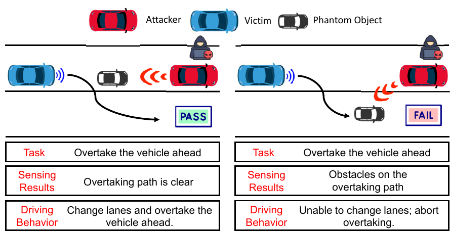
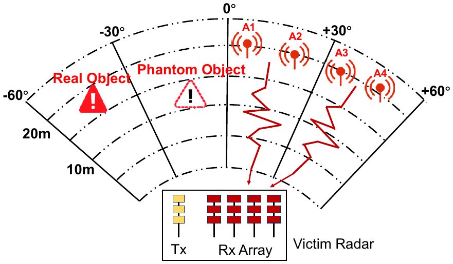
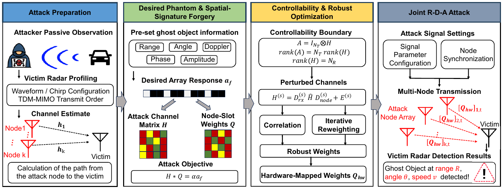
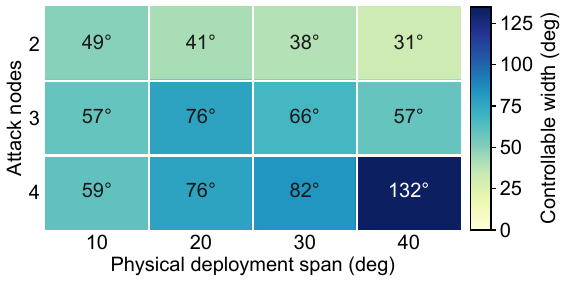
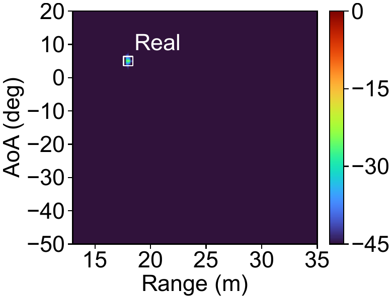
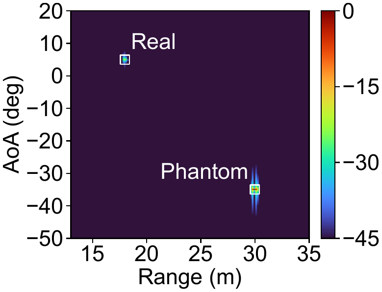
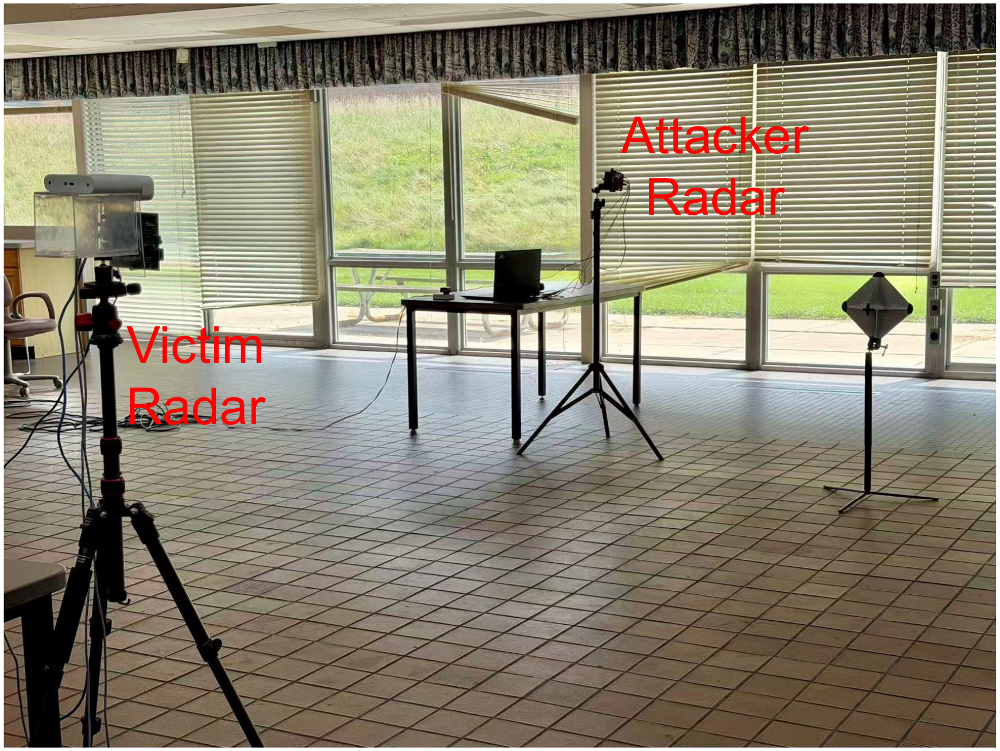
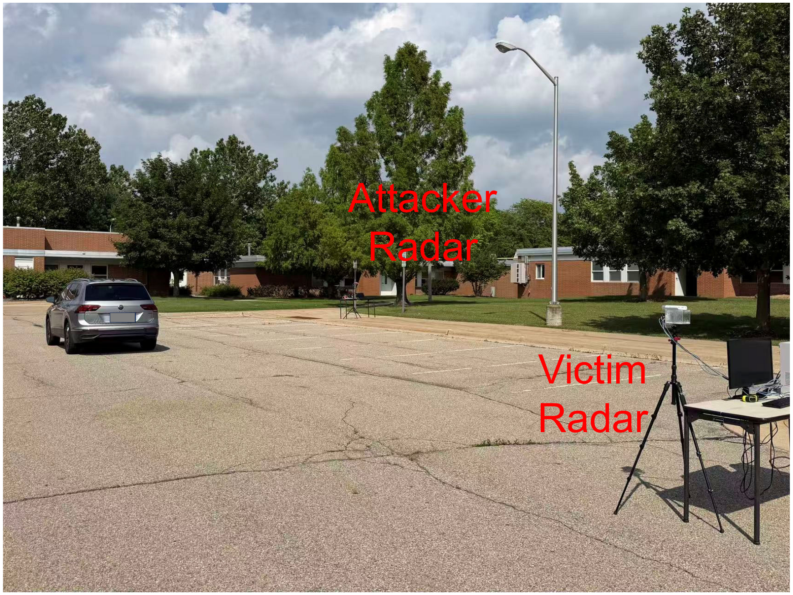
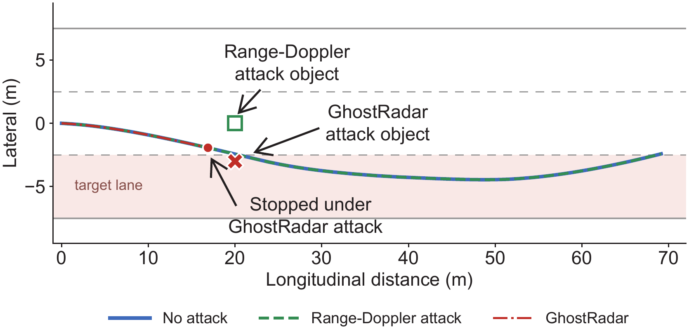
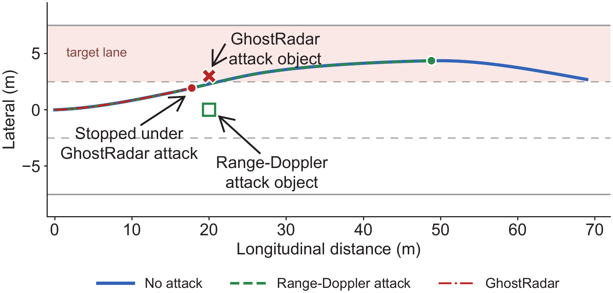

GhostRadar: Spatial-Signature Forgery for Angle-Decoupled Automotive Radar Spoofing
Abstract
Automotive radar is widely used in advanced driver-assistance systems (ADAS), yet its open wireless interface makes it vulnerable to spoofing. Prior attacks can manipulate phantom range and velocity, but the perceived bearing remains constrained by the physical direction of the attack transmitter. We present GhostRadar, an over-the-air attack framework that decouples phantom bearing from attacker location. Multiple coordinated radar nodes synthesize the victim radar's virtual-array response at a desired bearing. We characterize how attack-node geometry and channel conditions constrain the controllable angular region, optimize radar parameters under channel variation, and map the resulting configurations to hardware-supported amplitude and phase settings.
Physical experiments on 77-GHz radar channels validate GhostRadar's ability to decouple spoofed bearing from attacker location. With four attack nodes confined to a 40° physical sector, GhostRadar achieves 132° of out-of-sector angular control, including a contiguous 33° interval. Across independent channel realizations, 96.8% of phantoms are localized within 1° of the requested bearing, with a 0.609° mean absolute error. Across 1,908 closed-loop driving episodes, GhostRadar causes 80.71% of lane-change and overtaking maneuvers to abort, compared with 8.44% under traditional forward-only radar spoofing.
1. Introduction
Modern vehicles rely on frequency-modulated continuous-wave radar to estimate range, velocity, and angle in adverse weather and lighting. Existing spoofing attacks mainly manipulate range and velocity, while the perceived bearing remains coupled to the attack transmitter's physical direction. This limits where a phantom can appear and, consequently, how it influences planning.

GhostRadar introduces angle decoupling: the phantom target's reported bearing can differ from the physical bearing of every attack transmitter. Within the controllable angular region, the victim radar estimates the bearing from a forged spatial signature rather than from the location of a single attacker.

2. Threat Model
The attacker passively profiles the victim radar, recovers its waveform and TDM-MIMO transmit order, and estimates the channels from the attack nodes to the victim. The attacker then selects a desired phantom range, radial velocity, bearing, amplitude, and phase. The attack is evaluated only in controlled laboratory settings, simulation, and datasets.
3. GhostRadar Design
GhostRadar computes slot-dependent complex weights for multiple synchronized attack nodes. The combined signal reproduces the victim radar's virtual-array steering response for a target at the requested bearing. In simplified form, the attack solves
H Q = α af,
where H is the attack channel matrix, Q contains the node-slot weights, and af is the desired array response. Robust optimization and hardware mapping preserve this response under channel variation and finite RF settings.

4. Experimental Methodology
The evaluation uses a 3-transmitter, 4-receiver TDM-MIMO victim radar and its complete processing chain. Signal-level experiments measure controllability, robustness, CFAR detection, range error, velocity error, and bearing error. Real 77-GHz propagation channels are measured in an indoor laboratory and an outdoor parking lot. Closed-loop CARLA experiments integrate radar and camera perception with autonomous planning.
5. Evaluation
5.1 Angular Controllability
With four attack nodes spanning a 40° physical sector, GhostRadar provides 132° of total controllable bearing outside that sector. The largest continuous out-of-sector interval is 33°. More nodes and a wider deployment span improve channel conditioning and increase the controllable region.

5.2 Robustness and Radar-Processing Accuracy
Robust mapped weights achieve 96.8% success on independent test channels, with 0.609° mean absolute bearing error. After the complete victim processing chain, approximately 93.3% of trials produce a matched CFAR detection, joint range-Doppler-angle success is approximately 77%, and bearing error remains approximately 0.9°.


5.3 Measured 77-GHz Channels
Indoor and outdoor measurements confirm that practical wireless environments provide enough independent spatial responses for substantial out-of-sector bearing control. Across the tested range intervals, a requested bearing up to 40° is produced with approximately 2° error in both environments.


5.4 Real-World Demonstration
Video 1. Real-world parking-lot experiment demonstration.
5.5 Multimodal Driving Impact
Across 1,908 GhostRadar episodes, 80.71% of lane-change and overtaking maneuvers are aborted. Under the forward-only baseline, the abort rate is 8.44%. Among detected GhostRadar phantoms, 85.86–97.71% change the planned path. The result remains consistent across day, night, and rain.


6. CARLA Failure Cases
The following videos show representative autonomous-driving failures at four CARLA locations under heavy rain and nighttime sensing conditions.
Location 1
Heavy rain
Night
Location 2
Heavy rain
Night
Location 3
Heavy rain
Night
Location 4
Heavy rain
Night
7. Discussion
Potential Defenses
Possible defenses include examining the spatial distribution of radar returns, checking whether range, velocity, bearing, and radar response evolve consistently across time, and comparing radar observations with other sensing modalities.
Limitations
The hardware measurements use real 77-GHz propagation channels but do not include simultaneous transmission from multiple synchronized attack nodes. The measurements also use fixed attacker and victim locations. Future work will evaluate a synchronized multi-node RF platform and study mobility, faster channel estimation, synchronization error, and update delay.
8. Conclusion
GhostRadar decouples a phantom's reported bearing from the physical directions of the attack nodes by reproducing the victim-side virtual-array response for a requested bearing. The results show that bearing control substantially expands the capability and downstream safety impact of automotive radar spoofing.
Ethical Considerations
All experiments were conducted in controlled laboratory settings or using simulation and datasets, without road tests, interactions with real vehicles in the wild, or exposure to uninvolved third parties. The study involves no human subjects and collects no personal or sensitive data. The work reports the details necessary for scientific evaluation and the development of defenses.